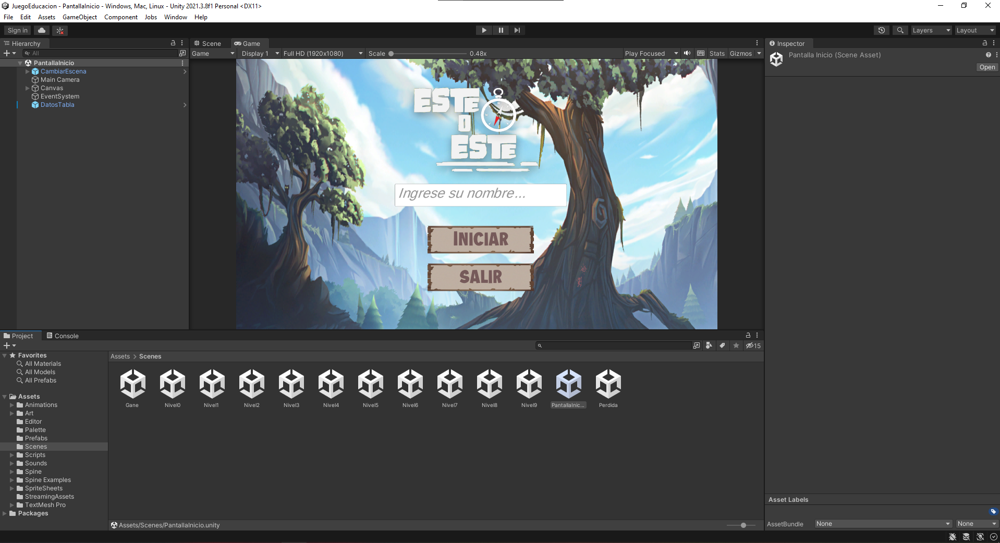
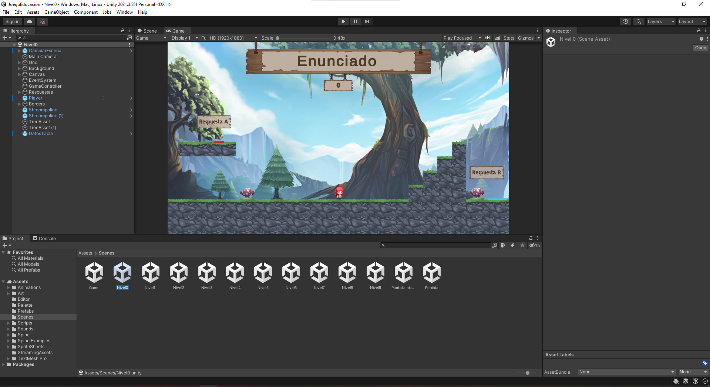
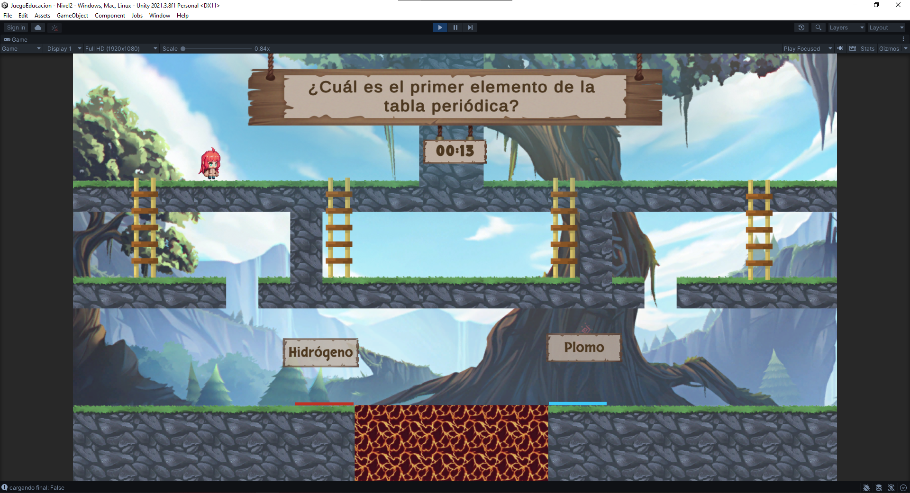

Creación de un videojuego educativo llamado
EsteOeste en Unity

Este juego está centrado en la ciencia, el paisaje del mismo se inspira en la naturaleza, ofreciendo escenarios
que
reflejan diversos ecosistemas y entornos naturales. Las preguntas del juego se enfocan principalmente en temas
relacionados con las ciencias, abarcando áreas como la biología, la ecología y la geografía (al modificar un
archivo de texto se pueden personalizar las preguntas que saldrán random en cada nivel), lo que no
solo desafía el conocimiento de los jugadores, también desafía la motora y los educa sobre el mundo natural
El objetivo del juego es responder correctamente a las preguntas para avanzar de nivel. A diferencia de otros
juegos de preguntas y respuestas, en este caso, el jugador debe mover a un personaje y hacer que toque un botón
cerca de la respuesta correcta en lugar de simplemente hacer clic en ella. Cada nivel otorga al jugador 30
segundos para leer la pregunta, atravesar los obstáculos y llegar a la respuesta correcta.
En colaboración con un compañero, me encargué de la programación del personaje, el diseño de los escenarios, la
creación de una tabla de clasificación con las cinco personas que lleguen más lejos, y la implementación de la
lógica de las interacciones del personaje con el entorno.
Este juego fue desarrollado durante un semestre universitario y está dirigido a estudiantes jóvenes. Las
preguntas del juego están almacenadas en un documento de texto que puede ser modificado con facilidad, y se
seleccionan aleatoriamente en cada nivel.


Para el desarrollo del juego, utilizamos el motor gráfico Unity y programamos en C#. El diseño del personaje,
sus animaciones y todos los elementos gráficos fueron realizados por otros compañeros del curso, quienes se
encargaron de todos los aspectos visuales del juego.